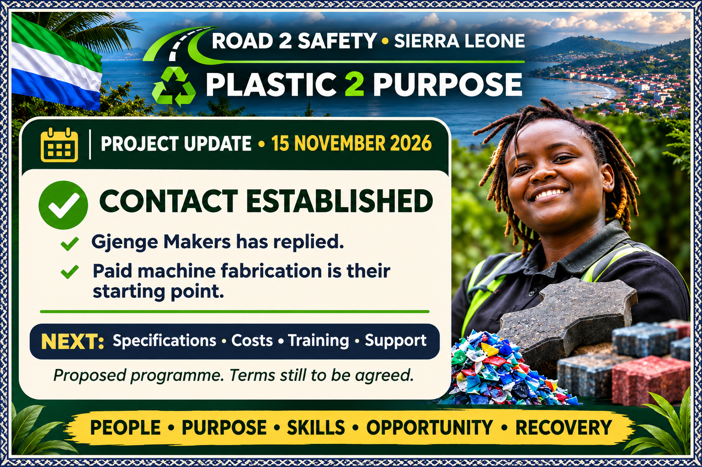

Plastic 2 Purpose.
Contact established.
Gjenge Makers has replied to Road 2 Safety’s exploratory approach. Their initial response identifies machine fabrication at a fee as the starting point for collaboration.
Next: seek an itemised quotation and clarify specifications, training, transport, installation, ongoing support and any licensing or technical-cooperation terms.
THE PROPOSED PATHWAYPlastic waste → Paid collection → Skills → Local production → Employment → Recovery & reintegration.
Exploratory stage. The programme remains in development. No partnership, licence or endorsement is being claimed; equipment and cooperation terms remain to be agreed.